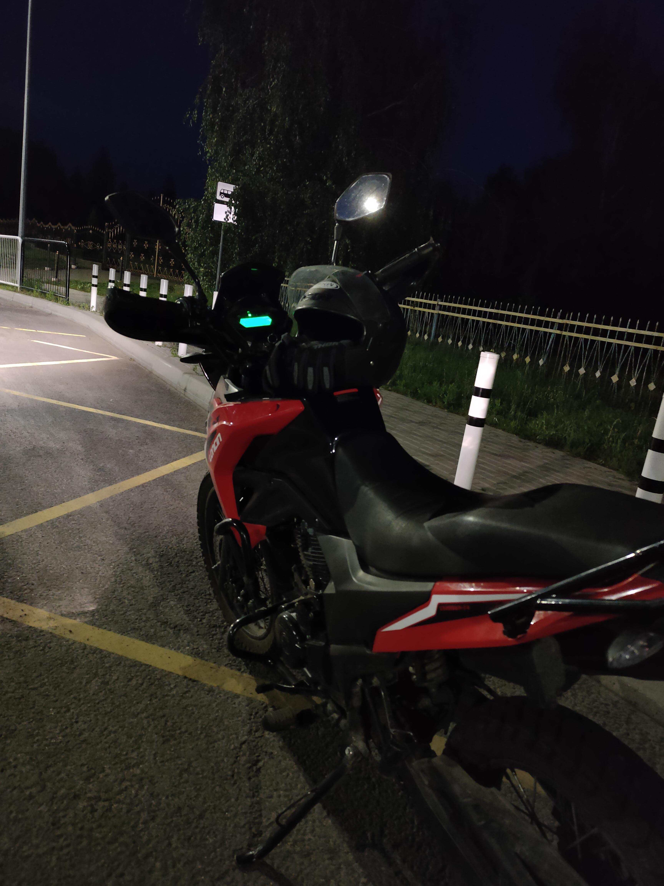
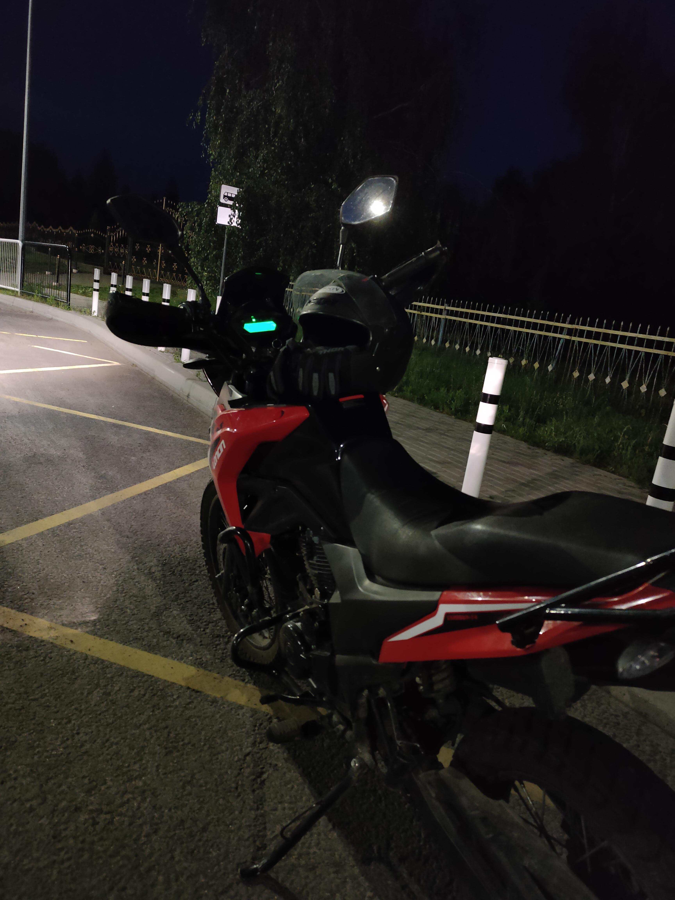
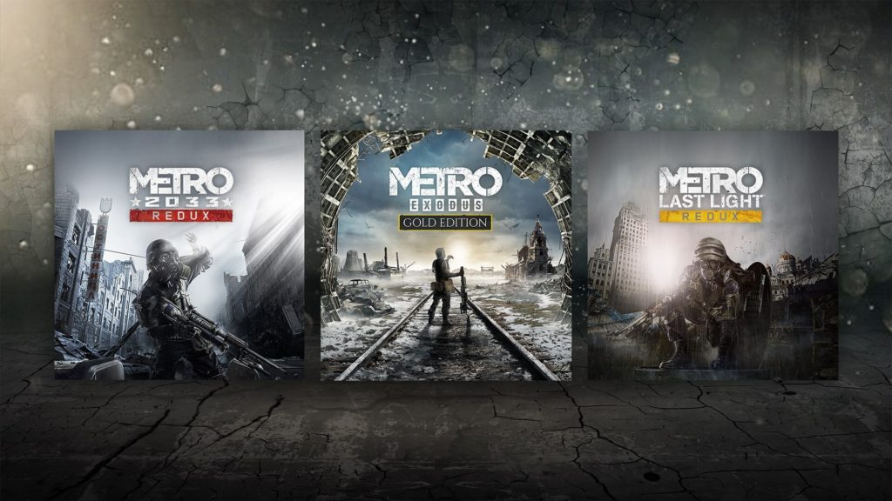
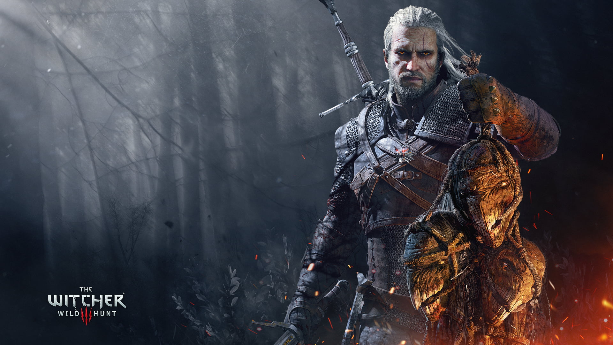
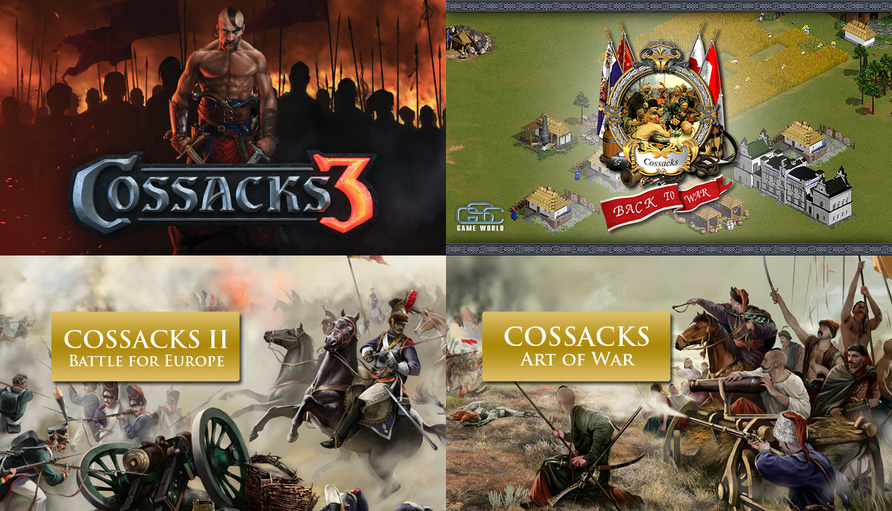
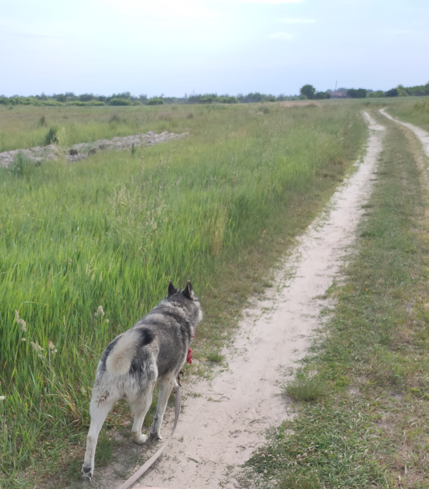
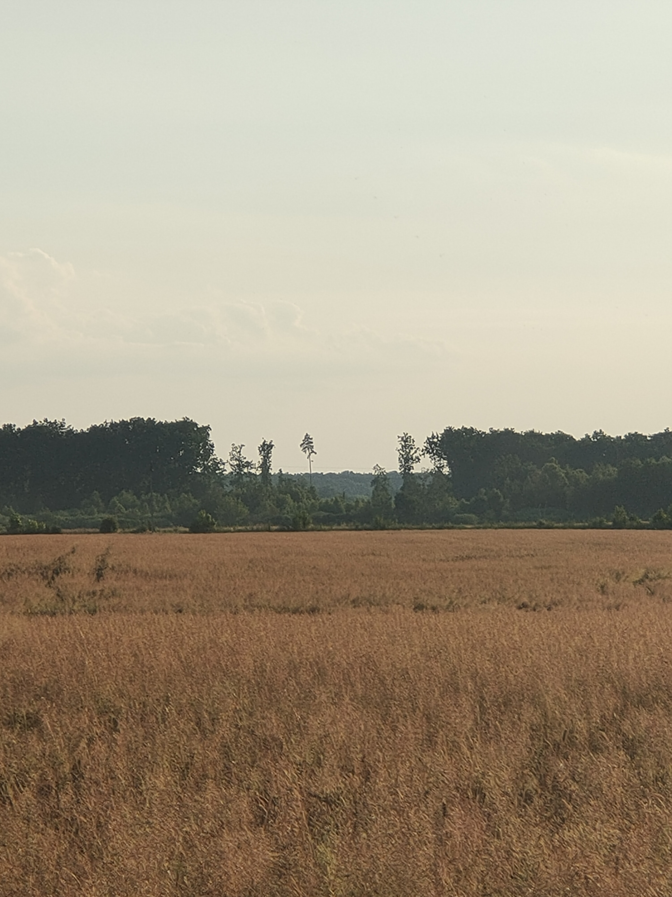

Мото
Поїздки на мотоциклі завжди приносили позитивні емоції, це був коктель адреналіну та дофаміну. Сідаючи та рушаючи на залізному коні, з'являлося відчуття свободи, часткової необмеженості та водночас відповідальності. Кожна поїздка була чимось особливою, незважаючи чи їздив сам, чи з компанією, чи їхав в полі, лісі, чи в місті.


 

Ігри
Цікавим заняттям яке постійно затягувало були ігри. Вони переносили у свій віртуальний світ, занурювали в сюжет, співставляли з головним героєм. Ігри зазвичай викликали позитивні емоції, але іноді це були співчуття персонажам, іноді й злість.
  
Прогулянки
Також мені подобалося проводити час на природі не лише на мотоциклі, а й пішки. Якраз тому я гуляв з собакою, це могли бути прогулянки в звичайному темпі, а могли бути бігові тренування. Ліси, поля, лісосмуги, берега річки, залізничні колії, доти з часів другої світової війни - це місця де я періодично проходив, або пробігав. Це хоббі мабуть було одне з найкорисніших, оскільки воно напряму підвищувало мою фізичну тренованість.
 